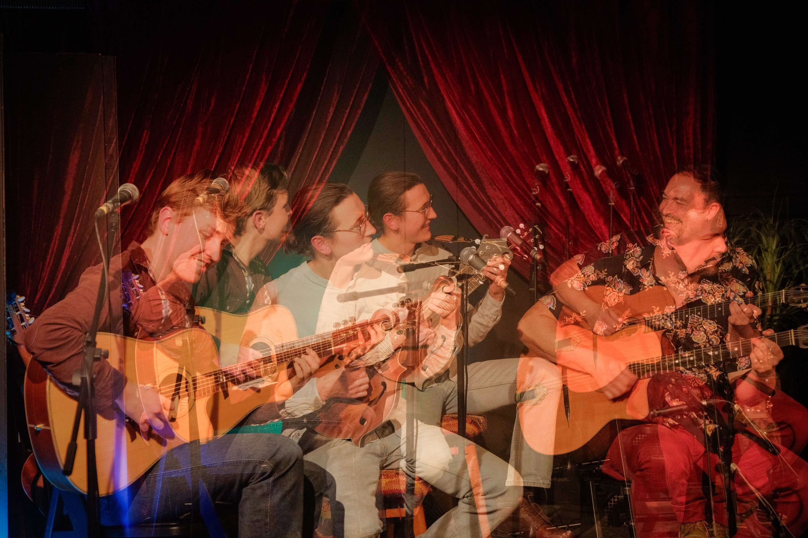
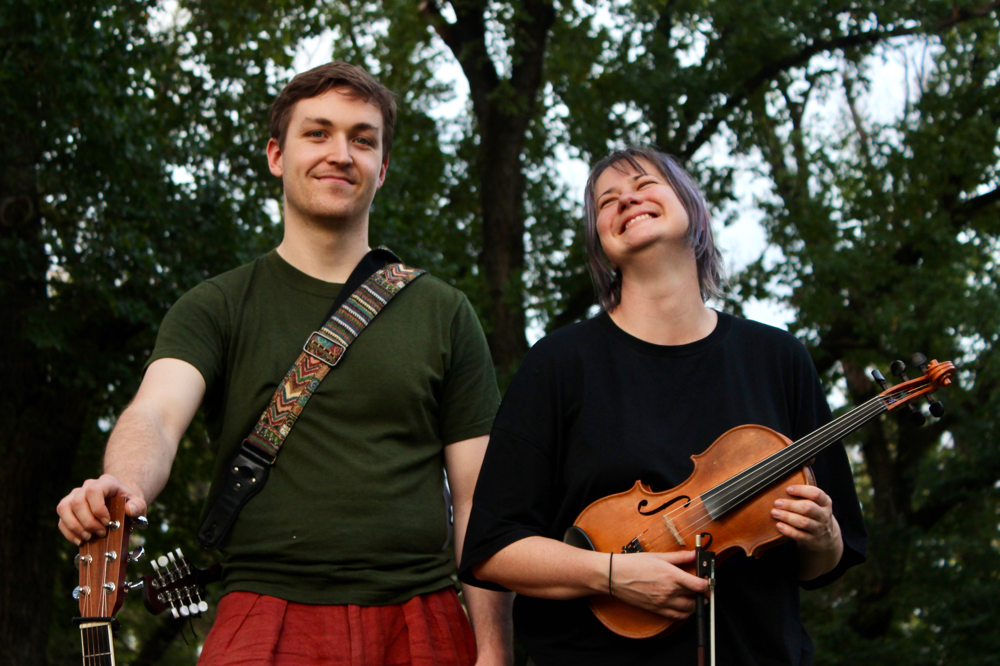
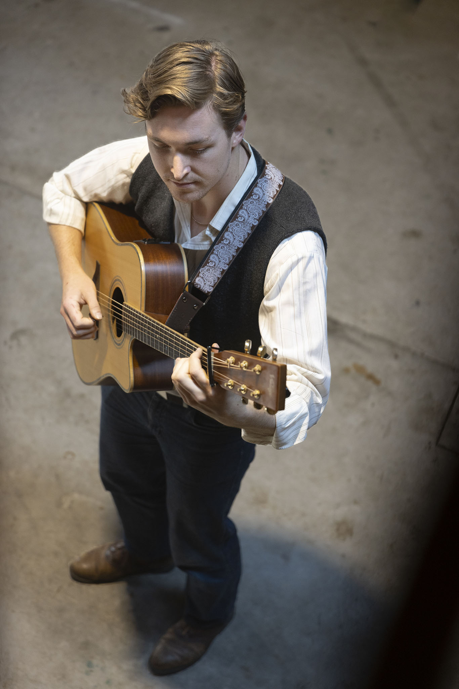

Noah and his Merry Men
My jazz quartet featuring all original compositions. We play music inspired by folk and americana as well as jazz icons such as Julian Lage, Brian Blade and The Bad Plus.

A trio of guitarists, we combine our massive collections of guitars and other pluckable instruments to play guitar-centric music from around the world.


A fiddle and guitar duo, we play original contemporary folk and tradtitional tunes with a twist.
My jazz quartet featuring all original compositions. We play music inspired by folk and americana as well as jazz icons such as Julian Lage, Brian Blade and The Bad Plus.

I love to play acoustic guitar on my own too. I have a collection of my own pieces as well as arrangements and reinventions of fiddle tunes. Some of my favourite pieces to play are from Julian Lage, and I think my own pieces reflect a bit of his style. Sometimes I'll even sing!